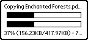

| FileCaddy | Build Number: 1159 |
Copying, moving, and deleting files and databases is easy. Simply select the files or databases you want to manipulate. Once all the items are selected, simply tap the button representing what you want done. You should see a progress dialog similar to the following:

Top line is the operation and current file (Copying, in this case), the fist bar is the current file's progress, the second bar is the total progress, and the final line is information about the current file: "% complete (current/total size) - speed".
| Up: | Table of Contents |
| Prev: | Getting Started |
| Next: | Menus |